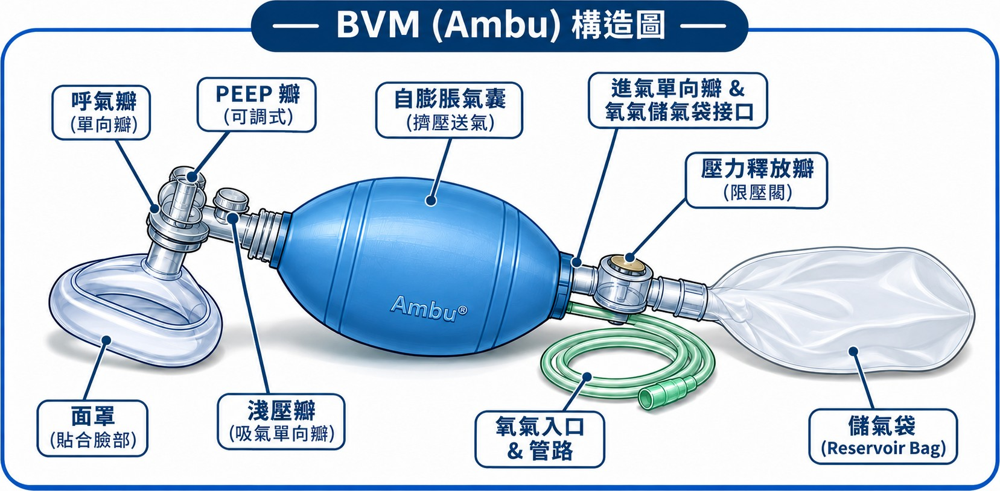
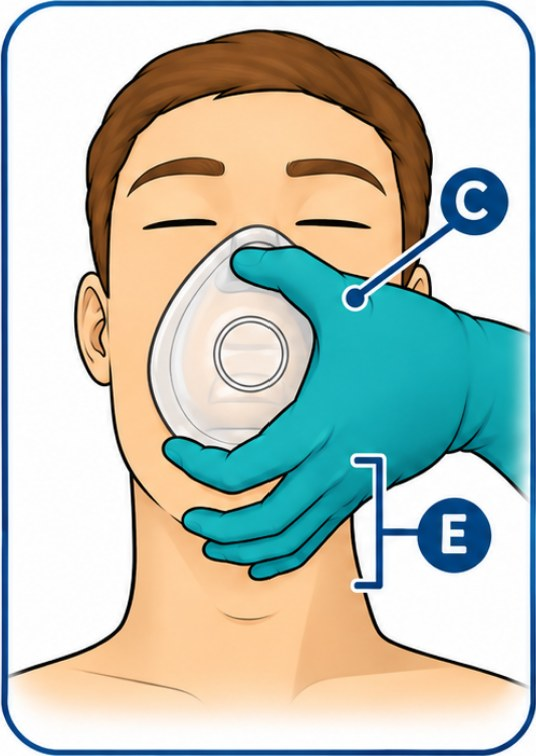
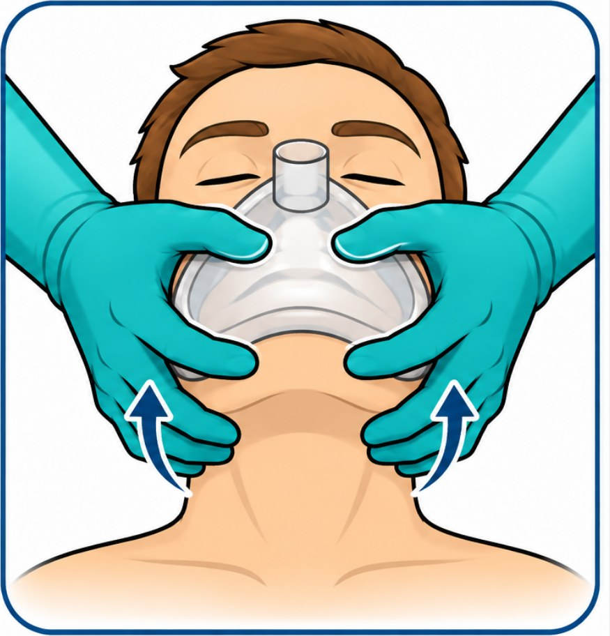

ACLS Instructor · Chapter 4
呼吸道、呼吸動力的處置及氧氣治療Airway, Ventilation & Oxygen Therapy
講師：台北市立聯合醫院陽明院區 急診主治醫師 懷顥
原著：鄭偉君、楊久滕、黃彥達〈第 4 章 呼吸道、呼吸動力的處置及氧氣治療〉 依 2025 AHA 成人 ALS／BLS 指引核對
Roadmap
本章地圖
③ 道：呼吸道 異物梗塞 打開呼吸道、抽吸 口咽／鼻咽呼吸道 進階呼吸道、SGA ⑥ RSI 與插管 流程、適應與禁忌 準備：人／物 動作與陷阱 LOAD、鎮靜、肌鬆
圖例：Class 1 建議 2a 合理 2b 可考慮 3 無益／有害 NEW 2025
Overview
CPR 時通氣的目的與原則
目的
最適潮氣容積、呼吸速率、吸入氧濃度：尚無定論
CPR 越久，血中氧氣存量越少 → 心臟停止一段時間後，壓胸與通氣都重要
兩個原則
放了進階呼吸道，通氣量常難達生理潮氣容積 → 看到胸廓起伏即可
ACLS 精華第七版 第 4 章 p.63
Ventilation during CPR
目擊心臟停止的前幾分鐘：壓胸優先
為什麼 CPR 時心、腦缺氧，主因是全身血流量下降 ，而非動脈氧含量降低。
→ 單一施救者在目擊心臟停止的前幾分鐘，不應為通氣中斷壓胸
怎麼做
口對口或 BVM 皆可，但不可延遲壓胸與 VF 去顫
通氣量過大的後果
通氣量過大／過快
▼
胸腔內壓 ↑
▼
靜脈回流 ↓ → 心輸出量 ↓
＋
胃內壓 ↑ → 胃脹氣、逆流、吸入
ACLS 精華第七版 第 4 章 p.63
Oxygen & ventilation during CPR · 猜猜看
給多少氧？多快通氣？點卡片揭曉・按 A 全部揭曉
CPR 進行中 ，吸入氧濃度給多少？
?
最高可行 FiO₂ 2b
能給 100% 就給 100%：短時間使用，氧中毒機率低
「最高可行」：例如院前口對口，不一定給得到
▸ 點擊揭曉 ROSC 之後 ，SpO₂ 目標是多少？
?
90–98%
相當於 PaO₂ 60–105 mmHg NEW 2025
低血氧、高血氧都有害 → 穩定後調降 FiO₂
▸ 點擊揭曉
通氣速率 壓胸 通氣 量 等級 尚未放進階呼吸道 30 下後暫停 連續 2 口 ，每口 > 1 秒 胸部明顯起伏（約 5–7 mL/kg） 2b 已放進階呼吸道 持續 100–120／分，不暫停 每 6 秒 1 口 （10／分），每口約 1 秒見胸廓起伏即可 2b ROSC 後仍需 BVM — 每 6 秒 1 口 （10／分），每口約 1 秒見胸廓起伏 2a
ACLS 精華第七版 第 4 章 p.63–64、68–70；2025 AHA Part 11 Post–Cardiac Arrest Care
Positive-pressure vs passive oxygen · Barrier devices
正壓通氣才是主力；院前用口袋面罩
為什麼被動給氧不夠
無法確保足夠通氣量 壓胸 → 功能肺餘容量 ↓、氣道塌陷、肺不張 → 肺損傷、心輸出量 ↓ 能兼顧有效通氣與壓胸（30:2）者，預後顯著較好
院前：屏障裝置
圖片來源：s3.us-east-2.amazonaws.com
口袋面罩 pocket mask有就優先用 圖片來源：www.defibshop.com.au
面膜式防護片 face shield
一般民眾：口袋面罩、防護片、直接口對口皆可接受可能改善存活
ACLS 精華第七版 第 4 章 p.64
Framework
評估與處置的順序：道 → 力 → 氣
道
AIRWAY
呼吸道暢通？
打開呼吸道 、抽痰、移除異物輔助呼吸道：口咽／鼻咽 進階呼吸道 ：SGA、ETT外科呼吸道 力
VENTILATION
呼吸動力足夠？
不足 → 立即正壓通氣 ambu bagging ） 不需急著插管 ，可先非侵入性改善通氣氣
OXYGENATION
氧氣供需平衡？
依 SpO₂ 與呼吸型態選裝置 鼻導管、面罩、高流量氧氣
ACLS 精華第七版 第 4 章 p.64–65
03
道：呼吸道的評估及處置 任何昏迷或無反應的病人，打開呼吸道是第一步
Airway assessment
可能影響呼吸道的情形
嚴重（近乎完全）阻塞
微弱／無聲咳嗽 無法說話 喘鳴 stridor、膚色發紺 雙手緊握頸部 呼吸停止、意識改變 背部拍擊 ⇄ 腹部推擠
意識不清 舌後肌張力喪失 → 舌根塌陷 ；常合併分泌物或異物
創傷 頭頸、顏面、口咽腫脹；血液、分泌物 → 及早處置
ACLS 精華第七版 第 4 章 p.65
FBAO
異物梗塞的處置詳見第 3 章
懷疑異物梗塞：問「你噎到了嗎？ 」
▼ 輕微：大力咳嗽、能說話
鼓勵咳嗽
▼ 變成無聲咳嗽
→ 轉到右側
▼ 嚴重：無聲咳嗽、不能說話
5 次背部拍擊 ⇄ 5 次腹部推擠 交替，啟動 EMS 1
▼ 失去反應
躺平 → 開始壓胸 ，啟動 EMS
▼
吹氣前看口腔，看得到才取 1
特殊情況 瀕產孕婦 或無法環抱者 → 改用胸部推擠 1
院內 可用 Magill forceps 夾出口腔異物
ACLS 精華第七版 第 4 章 p.65
Opening the airway · Suction
打開呼吸道：壓額提下顎 vs 下顎推擠
壓額－提下顎法 head tilt–chin lift
圖片來源：www.firstaidweb.com
非頸椎創傷 1 ；一般民眾不論是否創傷都教這招
下顎推擠法 jaw thrust
圖片來源：www.firstaidweb.com
懷疑頸椎損傷 ，受訓者執行，避免過度伸展 1 ；頸椎以徒手固定
抽吸 從口角 或鼻孔放入，勿從嘴巴正中間進去 （刺激懸雍垂、誘發嘔吐）。
ACLS 精華第七版 第 4 章 p.65–66
Adjunct airways
口咽 vs 鼻咽呼吸道適當使用甚至可避免插管
口咽呼吸道 OPA
圖片來源：www.openhouseproducts.com
時機：完全昏迷、無嘔吐或咳嗽反射
尺寸：嘴角 → 同側耳垂 ，先比再放 反向放入，碰咽後壁轉 180° 太長壓會厭、太短推舌根；有反射 → 嘔吐 鼻咽呼吸道 NPA
圖片來源：www.uscimaging.com
時機：半昏迷、仍有反射 ；牙關緊閉也可
尺寸：鼻尖 → 耳垂 ；先潤滑，斜面朝鼻中隔 鼻出血（30%）、喉痙攣、心搏過緩 顏面創傷、疑顱底骨折 、凝血異常 → 用 OPA 2a
ACLS 精華第七版 第 4 章 p.66–67
Advanced airways
什麼時候建立進階呼吸道
建立時機
呼吸停止或意識混亂，無法自主維持呼吸道 其他方法無法確保呼吸道開放 需要預防吸入 非侵入性給氧仍無法維持血氧 顱內壓升高需過度換氣治療 強調 插管不是 處理呼吸窘迫的第一步；準備不足貿然插管，常是病況惡化的主因。
選項
聲門上呼吸道 SGA ：LMA、i-gel 不需看聲帶、不需停壓胸
氣管內管 ETT 確定性呼吸道
原有氣切管路 有氣切的病人直接由氣切管通氣
外科呼吸道 ：環甲膜針刺、切開 插不上、通不了氣
院外：ET、SGA 皆可；院內：受過訓練者用 ET 或 SGA 皆合宜 2a
ACLS 精華第七版 第 4 章 p.67、84
Supraglottic airway
聲門上呼吸道 SGA：LMA 與 i-gel
喉頭面罩 LMA
圖片來源：activelifemed.com
尺寸 體重 氣囊最大量 3 30–50 kg 20 mL 4 50–70 kg 30 mL 5 70–100 kg 40 mL 6 > 100 kg 50 mL
記法：(size − 1) × 10 mL
i-gel
圖片來源：www.intersurgicalinc.com
不用打氣 （凝膠軟罩）
尺寸 體重 顏色 3 30–60 kg 黃 4 50–90 kg 綠 5 > 90 kg 橘
適用 不需看到聲帶 ，訓練後 EMT 可執行頸椎受傷 不能動脖子困難插管 時的通氣與給氧CPR 中放置不需中斷壓胸 注意 口咽損傷、聲帶水腫 通氣量大、壓力高、放太久 → 胃內容物逆流 不能完全防止吸入
ACLS 精華第七版 第 4 章 p.83；尺寸表：Teleflex LMA Classic／Supreme 使用說明、Intersurgical i-gel 產品資料
SGA insertion
SGA 放置流程
1 選尺寸 ：LMA、i-gel 依體重
▼
2 準備 ：LMA 先抽光氣囊 ；背面潤滑（i-gel 薄塗）
▼
3 擺位 ：嗅吸姿勢；頸椎傷維持中立
▼
4 置入 ：像握筆，前端貼硬顎 ，沿弧度往後下推到有阻力
▼
5 固定位置 ：LMA 打氣 (size−1)×10 mL；i-gel 不打氣
▼
6 確認 ：接 BVM → 胸廓起伏、聽診、波形 ETCO₂
▼
7 固定 ：膠帶或固定帶
CPR 中 放置不需中斷壓胸 ；放好後持續壓胸，每 6 秒 1 口
常見問題 漏氣：尺寸不對、位置太淺、通氣壓力太高 舌頭被推到後方 → 用手或壓舌板協助 通氣不好 → 拔出、BVM 通氣後再放 確認位置 SGA 有效通氣時，CPR 與 ROSC 後都應看到連續 ETCO₂ 波形
ACLS 精華第七版 第 4 章 p.68、83
Airway strategy during CPR
CPR 中怎麼選呼吸道策略
建議 等級 依病況與插管能力，BVM 或進階呼吸道 皆可 2b 放置進階呼吸道會中斷壓胸 → 延後插管 ，直到初步 CPR 與電擊無效或 ROSC 後 1 訓練有限的 EMS：院外 CPR 以 SGA 替代 ETI ，不需中斷壓胸 2a 各救護系統應追蹤 ETI 成功率 ，決定用 ETI、SGA 或單純 BVM 2a
ACLS 精華第七版 第 4 章 p.68；2025 AHA Part 9 Adult ALS
Assessing ventilation
什麼時候要幫病人呼吸
前兆：呼吸動力快不夠了 > 30 次／分
或使用輔助呼吸肌
預期待會需要 BVM → 可儘早給
現在就要通氣 < 8–10 次／分
或臉頰靠近感覺不到氣流
→ 立即支持呼吸動力（ambu bagging）
ACLS 精華第七版 第 4 章 p.69
Bag-valve-mask
BVM 的構造俗稱 Ambu（商品名）

圖片來源：AI 繪製，講師提供
ACLS 精華第七版 第 4 章 p.69–70
BVM technique
甦醒球的使用方法
頭後墊毛巾，擺嗅吸姿勢
接氧氣 15 L/min ，儲氣袋充飽
站頭端，面罩尖端朝額頭
C-E 手勢 單手扣緊，另一手擠球二人操作更理想 ：一人雙手密合面罩，一人擠球 2a

圖片來源：AI 繪製，講師提供
C-E 手勢 ：拇指＋食指成 C 壓面罩；三指成 E 扣下顎骨上抬
圖片來源：AI 繪製，講師提供
雙人法 ：雙手 C-E 密合，另一人擠球
陷阱 緊張時不自覺捏太快、太大 → 胃脹氣、逆流、回心血量 ↓、ROSC 機會 ↓
ACLS 精華第七版 第 4 章 p.68、70
After BVM
BVM 之後不一定要插管
可逆原因 先 BVM 維持通氣，治好原因 往往不需插管
情境 嗎啡過量呼吸 6 次／分：打開呼吸道 → BVM → naloxone → 醒了，不用插管。
ACLS 精華第七版 第 4 章 p.70
SpO₂ targets
SpO₂ 幾分才夠？
不同病人的目標
病人 目標 SpO₂ ACS < 90% 才給氧，維持 90–98% COPD 88–92% ，避免過度氧合ROSC 後 90–98% NEW 2025
ACLS 精華第七版 第 4 章 p.71
Oxygen delivery devices
四種給氧裝置：流速與 FiO₂
20% 40% 60% 80% 100%
鼻導管1–6 L/min
24–44%
每 +1 L 約 +4%；> 6 L/min 不再上升 ，鼻乾、流鼻血
簡單面罩6–10 L/min
Venturi 面罩4–8 → 10–12 L/min
非再呼吸面罩 NRM10–15 L/min
6 L ≈ 60%，每 +1 L 約 +10%；儲氣袋不可塌陷
60% → 95–100%
圖片來源：upload.wikimedia.org（資料：Branson RD. Respir Care）
Venturi 面罩 ：噴嘴決定 FiO₂；好處是 COPD 病人氧濃度穩定，不抑制呼吸驅動力
ACLS 精華第七版 第 4 章 p.71–72
Choosing a device
怎麼選裝置
裝置 適用 注意 鼻導管 輕微窘迫（SpO₂ 94–100%） 張口呼吸者不適合 （吸氣經口不經鼻）簡單面罩 SpO₂ 90–93% 流速 < 6 L/min 易 CO₂ 滯留 → 嗜睡、換氣不足 NRM 需高濃度：一氧化碳中毒 、SpO₂ 過低 單向閥＋吐氣閥，避免再吸入呼出氣體 Venturi COPD 合併 CO₂ 過高噴嘴高速氣流夾帶空氣；噴嘴越小、夾帶空氣越多、FiO₂ 越低 → 避免抑制呼吸驅動力
ACLS 精華第七版 第 4 章 p.71–72
Figure 4-1
RSI（Rapid Sequence Intubation）快速誘導插管使病人失去意識＋肌肉鬆弛
Preparation 準備設備、擺位、IV／monitor、穿戴 PPE
▼
Pre- 給 100% 氧氣、抽吸
▼
Pre- 考慮 premedication：LOAD
▼
Paralysis & 選擇鎮靜劑
▼
▼
▼
Placement & 氣管內管置入 失敗 → 尋求替代通氣途徑或其他專家
▼
▼
Post- 固定氣管內管 → 拍 CXR 調整位置
好處 又稱藥物輔助插管 DAI（drug-assisted intubation）
吸入性肺炎、缺氧 ↓；腦壓、血壓上升 ↓；插管較容易；病人不適 ↓
口訣 6PP reparation 準備P reoxygenation 預給氧P re-treatment 前導藥物P aralysis & induction 鎮靜＋肌鬆P lacement & proof 置入與確認P ost-intubation management 插管後照護
ACLS 精華第七版 第 4 章 圖 4-1（p.73）、p.77
RSI · Indications
什麼時候適合、什麼時候不適合 RSI
適合 非心臟停止 、無禁忌症、需要插管的病人
已近心肺停止 → 不需 RSI
不宜 RSI 評估為困難插管 ：顏面骨折變形、咽喉水腫或腫瘤、口內大量活動性出血 BVM 可能無法達到良好 SpO₂
3-3-2 困難插管張口 < 3 指、下巴到舌骨 < 3 指、舌骨到甲狀軟骨 < 2 指
Mallampati 需病人配合，急重症較不實用
失敗計畫 BVM 維持通氣 → 再試；自評無法完成 → 儘早找麻醉科 ，請耳鼻喉科待命氣切
ACLS 精華第七版 第 4 章 p.77
Difficult airway assessment
困難呼吸道評估：LEMON 與 HEAVEN
LEMON 解剖評估
L L ook externally外觀：顏面創傷、鬍鬚、短頸、肥胖 E E valuate 3-3-2M M allampatiO O bstruction 阻塞N N eck mobility 頸部活動
需病人配合（張口、Mallampati），急救時常做不到
HEAVEN 急救情境：解剖＋生理
項目 定義 H ypoxemia喉鏡時 SpO₂ ≤ 93% E xtremes of size≤ 8 歲兒童或肥胖 A natomic challenge創傷、腫塊、腫脹、異物 V omit／blood／fluid咽部有大量液體 E xsanguination疑貧血，會加速缺氧 N eck mobility頸部活動受限、神經損傷
緊急插管 病人常無法配合 LEMON；要考慮 HEAVEN ，因為它包含生理性困難 （缺氧、失血）——解剖看起來好插，病人也可能很快掉 SpO₂ 或血壓。
LEMON：Osmosis from Elsevier；HEAVEN：Davis DP, Olvera DJ, et al. Air Med J 2017；定義依 MDCalc
Preparation
Preparation：人、物、擺位
人：評估病人
AMPLE 過敏、用藥、過去史、上一餐、發生經過 頸 疼痛、腫瘤、血腫、創傷、氣管偏移 臉 張口、下顎、灼傷、水腫、舌大小、皮下氣腫 牙 鬆動、活動假牙 全身 大面積燒傷、壓碎傷、洗腎管路、IICP
團隊：PPE 全程（N95、護目、手套、防水隔離衣）
物：口訣 SOAP-ME
S Suction 抽吸 O O₂ 氧氣 A Airways 呼吸道器材 P Premedication 藥物 M Monitor 監視器 E ETCO₂
儘早建立 IV；疑高傳染性呼吸道病原 → 優先影像式喉鏡
步驟 動作與細節 Pitfall 擺位 頭後墊毛巾，嗅吸姿勢 — 預給氧 有自發呼吸用 NRM 給 100% ；呼吸動力不足才 BVMBVM 對抗自主呼吸 → 誘發嘔吐 備物 葉片 0–4 號（約嘴角到耳垂）；ET 男 7.5–8.0、女 7.0–7.5 ；10 mL 測氣囊 葉片燈不亮、氣囊破 通條 前端在管尖內 1–2 cm ，彎成適當曲度 凸出管尖 → 氣道傷害
ACLS 精華第七版 第 4 章 p.72–74、77–78
Premedication
口訣 前導藥物 LOAD不是每人都要，依臨床狀況選
藥物 適應症 好處 劑量 L idocaine頭部外傷、中風 （怕腦壓升高）局部麻醉，減緩插管引起的腦壓上升 1.5 mg/kg IV；30–60 秒起效 O piate（fentanyl）怕血壓、腦壓上升 減少兒茶酚胺反應；較少 histamine、降壓 1–3 µg/kg IV；60 秒起效快推或 > 15 µg/kg：胸壁僵直 A tropine< 1 歲、接受 SCH 的小孩、第二劑 SCH、插管時心搏過緩 減少分泌、拮抗迷走 0.01 mg/kg IV（最低 0.1 mg） D efasciculating預防 SCH 肌肉顫動（強壯青少年） 減少肌肉痠痛 SCH 前 2–3 分鐘給 10% 劑量非去極化劑
Pre-treatment 視狀況給，推完等 3 分鐘 再誘導；不是每個人都要給。Defasciculating agent 現在少用 。
ACLS 精華第七版 第 4 章 表 4-1、p.78–79
Induction agents
鎮靜誘導藥物：怎麼選、給多少
藥物 劑量 IV 起效 優點 缺點 Thiopental 巴比妥 3–5 mg/kg 20–40 秒 護腦、降腦壓 → 頭傷 IICP 心臟抑制、低血壓 ；低血容減量或不用 Ketamine 2 mg/kg 30–60 秒 保留呼吸驅動；擴支氣管 → 氣喘、休克 腦壓、眼壓、分泌物 ↑；成人解離反應 Midazolam 0.1–0.3 mg/kg 2 分 急救車常備 劑量範圍廣；老人、瘦弱、低血容先 2.5 mg 緩推 Etomidate 0.2–0.4 mg/kg 60 秒 血流動力影響極小 、降腦壓暫時抑制 cortisol；肌陣攣 Propofol 1–2 mg/kg 20–40 秒 甦醒快 血壓降約 15%、注射痛
依狀況選
血壓正常 都可 輕度低血壓 midazolam 嚴重低血壓 etomidate IICP、血壓正常 thiopental IICP、低血壓 etomidate 氣喘重積 ketamine
Paralysis & induction 先鎮靜、再肌鬆 → BVM 通氣到 SpO₂ ≥ 95% 再插；一段時間仍無法 ≥ 90% → 不要猶豫，直接插 。
ACLS 精華第七版 第 4 章 圖 4-1、表 4-1、p.79–80
Neuromuscular blockers
肌肉鬆弛劑：SCH vs Rocuronium
Succinylcholine（去極化）
1–2 mg/kg IV （2–4 mg/kg IM）；< 30–60 秒 起效，作用 3–5 分
副作用 禁忌症（表 4-2） 肌肉顫動、痠痛、橫紋肌溶解 中風、脊髓損傷 高血鉀 神經肌肉疾病 眼壓、胃內壓、腦壓 ↑ 腦壓增高、眼球開放傷、青光眼 惡性高熱、心搏過緩 惡性高熱病史、cholinesterase 不足 大面積挫傷或燒燙傷、高血鉀、腎衰竭
Rocuronium（非去極化） 0.9–1.2 mg/kg IV ；< 1 分 起效，作用約 40 分
起效接近 SCH、副作用較少；肝腎異常作用延長
Vecuronium 0.1–0.2 mg/kg IV；2–3 分起效，作用 30–60 分
SCH 高血鉀高風險期 燒傷、肌肉受傷：受傷後 3–60 天 上運動神經元疾病：1 週–6 個月
注意作用時間 Rocuronium 約 40 分 （SCH 3–5 分）→ 插管後要持續鎮靜 ；若插管困難 ，病人短時間無法恢復自主呼吸 ，更麻煩。
ACLS 精華第七版 第 4 章 表 4-1、表 4-2、p.81–82
Oral intubation
Placement：插管動作與陷阱
步驟 動作與細節 Pitfall 置鏡 右手撐嘴；左手握喉鏡由右嘴角 放入、舌推左；葉片尖端放入 vallecula 舌頭沒推開，擋住視野 挑起 用臂力往前上方約 45° 舉起 以上門牙當支點撬 → 斷牙、看不到送管 右嘴角送入，直視過聲帶，氣囊沒入聲帶下；深度約 21 cm （19–23） 視線離開聲帶 氣囊 打 8–10 mL，壓力 25–35 cmH₂O > 40 cmH₂O → 黏膜壓瘡 時間 20 秒 內；不成 → BVM 30–60 秒再試；CPR 中停壓 < 10 秒 一直試、不給氧 固定 膠帶＋防咬器；CXR 管尖在 carina 上 2–3 cm 躁動推入 → 單肺通氣
圖片來源：i0.wp.com
葉片尖端放在 vallecula （會厭谿：舌根與會厭之間）
ACLS 精華第七版 第 4 章 p.74–75
Cricoid pressure · BURP
環狀軟骨按壓 vs BURP：別搞混
環狀軟骨按壓 Sellick maneuver
目的：壓迫食道，防胃內容物逆流
找甲狀軟骨 → 往腳側滑到環狀軟骨 ，拇指＋食指垂直下壓 ET 置入且氣囊充飽後 才鬆手 禁忌：頸部或喉部受傷、正在大量嘔吐 2025 會阻礙通氣、影響 SGA 置放 → 心臟停止時不建議常規使用 3
BURP
目的：插管時讓聲帶視野更好
壓甲狀軟骨 ，往病人
B ackward
U pward
R ightward
P ressure：綜合方向施壓
ACLS 精華第七版 第 4 章 p.70–71；2025 AHA Part 9 Adult ALS
Confirming tube position
確認氣管內管位置
臨床評估：看、聽、感覺
直視管子通過聲帶 ：臨床上最確定聽診 5 點 ：左上腹（應無聲）＋雙側肺尖、肺底 雙側胸廓對稱起伏 管內水氣：可靠度有限 吵雜、肥胖、慢性肺病、惡病質 → 聽診不準
儀器：連續波形二氧化碳監測
確認並持續監測心臟停止成人 ET 位置最可靠 1
現場、運送、轉送全程監測 SpO₂ 上升判斷：反應慢、會延誤 可輔以支氣管鏡、CXR
CPR 中 確認位置時，壓胸中斷不超過 10 秒 ；懷疑錯位 → 再用喉鏡看，仍不確定就拔管改 BVM。
ACLS 精華第七版 第 4 章 p.68、75–76；2025 AHA Part 9 Adult ALS
ETCO₂
吐氣末二氧化碳：確認位置、評估 CPR、預測 ROSC
40
10
CPR：≥ 10 mmHg 代表壓胸有效
突然 > 40 mmHg → ROSC 早期徵兆
形式 拋棄式比色：紫 → 黃
插管後至少 6 次通氣 再判讀
判讀陷阱 偽陽性 ：誤插食道，殘氣短暫有 CO₂；比色紙遭胃液污染立刻變色
偽陰性 ：心臟停止肺灌流不足、肺水腫、嚴重支氣管痙攣、epinephrine
預後 高品質 CPR 20 分鐘 後仍 < 10 mmHg → ROSC 機率極低
可評估 CPR 品質、確認位置、預測 ROSC 1
ACLS 精華第七版 第 4 章 p.82
What changed in 2025
2025 指引不再提的工具
食道偵測器 EDD 2020：無波形 ETCO₂ 時的替代工具2025：未再提及
原理：壓扁球體接管，在氣管內會迅速膨脹、在食道則維持扁塌。肥胖、妊娠末期、支氣管痙攣、胃脹氣時易誤判
超音波 POCUS 過去：可協助確認管位、雙肺滑動2025：列為辨識可逆原因的輔助 ，不得延誤或中斷壓胸
影像品質受體型、設備、經驗影響
自動輸送呼吸機 ATV 2020：已放進階呼吸道後可用於運送2025：未列入建議
優點：減少人工誤差、減少中斷；限制：氧氣電力、設定、成本
ACLS 精華第七版 第 4 章 p.82–83、85；2025 AHA Part 9 Adult ALS
Deterioration after intubation
口訣 插管後氧合變差：DOPE
D
Displacement
管路滑脫
進食道、單側支氣管
O
Obstruction
管腔或迴路阻塞
痰、血、扭折、咬管
E
Equipment failure
通氣設備失效
氧氣源、呼吸器、管路
實務 先脫離呼吸器改 BVM 手動通氣，同時看波形 ETCO₂，逐一排除。
ACLS 精華第七版 第 4 章 p.75
07
其他進階呼吸道與外科呼吸道 插不上、通不了氣時的退路
Surgical airway
插管失敗、BVM 也拉不上來
環甲膜針刺術（緩兵之計）
Adam's apple 往腳側摸到凹陷 12–14 G 導管接空針，正中 45° 朝腳側刺入負壓消失 → 推軟管、抽硬管 圖片來源：images.squarespace-cdn.com
另類作法（拿針筒） 軟管接 3 mL 針筒 （拔掉推柄）→ 塞入 7.5 ET 的接頭 → 接 BVM 通氣
易 CO₂ 滯留，氧氣約撐半小時 → 趕快找麻醉科
環甲膜切開術 cricothyroidotomy
圖片來源：traumaicu.org
放 6 號 ET ，送到 cuff 進入氣管即可 或 6.0 低壓帶囊氣切管 病人原有氣切管：記得先檢查 能不能用
ACLS 精華第七版 第 4 章 p.84
Summary
一頁看完
CPR 中 壓胸優先，30:2，每口 1 秒 能給 100% 就給 2b 進階呼吸道：每 6 秒 1 口 正壓通氣，不靠被動給氧 道 輕微異物鼓勵咳；嚴重背擊＋腹推 壓額提下顎；頸傷下顎推擠 1 OPA 無反射、NPA 半昏迷 SGA：LMA、i-gel 力 < 8–10 次／分 → 通氣 雙人 BVM 2a 、C-E 手勢 不常規環狀軟骨按壓 氣 ROSC 後 SpO₂ 90–98% COPD 88–92%，Venturi 鼻導管 ≤ 6 L/min；NRM 10–15 RSI 與插管 人／物準備：AMPLE、SOAP-ME 低血壓：etomidate／ketamine 高血鉀風險避 SCH；roc 後持續鎮靜 確認與外科呼吸道 波形 ETCO₂ 確認 1 變差想 DOPE CICO：針刺（針筒接頭）、切開（6 號 ET）
ACLS 精華第七版 第 4 章
References
參考資料
鄭偉君、楊久滕、黃彥達。第 4 章 呼吸道、呼吸動力的處置及氧氣治療。ACLS 精華 第七版，精華篇 p.63–85。
Part 9: Adult Advanced Life Support. 2025 American Heart Association Guidelines for CPR and ECC. Circulation 2025;152(16 suppl 2):S538–S577. doi:10.1161/CIR.0000000000001376
Part 11: Post–Cardiac Arrest Care. 2025 AHA Guidelines for CPR and ECC. Circulation 2025;152(suppl 2).
Part 10: Adult and Pediatric Special Circumstances of Resuscitation. 2025 AHA Guidelines for CPR and ECC. Circulation 2025;152(suppl 2).
Part 7: Adult Basic Life Support. 2025 AHA Guidelines for CPR and ECC. Circulation 2025;152(suppl 2).
使用聲明 本投影片供 ACLS 教學使用。藥物劑量與實際處置依最新指引與院內規範。